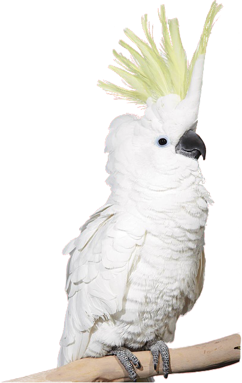
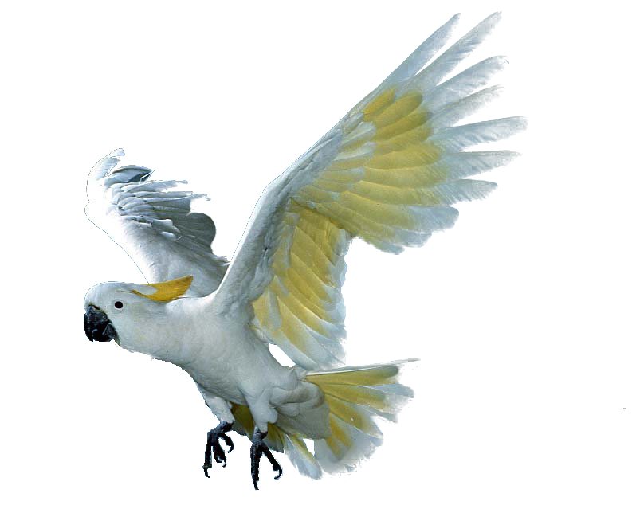

巴 丹


巴 丹
巴丹鸚鵡為多種鸚鵡的俗稱，其中多指稱白鳳頭鸚鵡屬之下所包含的數種鸚鵡。
白鳳頭鸚鵡屬的鸚鵡原生於菲律賓、華勒斯線、所羅門群島與澳洲南部。牠們長著白色的羽毛（某些種類可能摻雜著粉羽或黃羽）、可伸展的頭冠、與一個黑色的鳥喙。
現今，白鳳頭鸚鵡中的多種鸚鵡的保育狀況被視為是受到威脅的。由於棲地遭到破壞與大量的誘捕，藍眼巴丹、雨傘巴丹、鮭冠巴丹已被列為易危物種，而紅肛巴丹與小巴丹則已經被列為極危物種。
巴丹鸚鵡在二名法中，屬名為"Cacatua"。語源自馬來語中的"kakaktua"，意為「老姐姐」。
巴丹是一種高度社交性的鸚鵡，飼主需要經常陪伴在巴丹身邊與他玩耍。如果太常讓巴丹處於獨處的狀態，巴丹可能會為了吸引目光而不斷發出叫聲，更甚至可能會自殘式地拔自己的羽毛。
為了避免這種狀況，建議飼主可以多花點時間陪伴巴丹玩耍，又或是可以多養一隻鳥陪巴丹作伴。
巴丹的超強精力讓他比平偉還要會拆。他們很喜歡啃咬周圍的一切東西，所以如果想養一隻在家的話可能得做好傢俱被拆卸的心理準備。
如果買些可破壞的玩具讓巴丹過剩的精力有地方發洩的話，或許可以消磨一些巴丹的破壞力也說不定。
巴丹有著相當洪量的叫聲，在飼養前可能得先考慮一下街坊鄰居。巴丹的說話能力與其他鸚鵡比起來的話可能並沒有這麼出色，他更擅長的是隨著音樂跳舞或是學些雜技。
※巴丹為多種鸚鵡的俗稱，可能未列舉出所有巴丹